本學期課程教授if、then、else等條件判斷式，其向性能很好的與此次主題相容。
藉由條件判斷式來判斷密碼是否正確，就如同平常登入遊戲、APP等之登入介面，故此次小組決定以遊戲登入的畫面來製作與初步研究此次的專題報告。
以登入畫面作為起始頁面，並於三個頁面內分別但不限於內置標籤、輸入盒、密碼輸入盒 、按鈕、選單、訊息窗等UI元件。
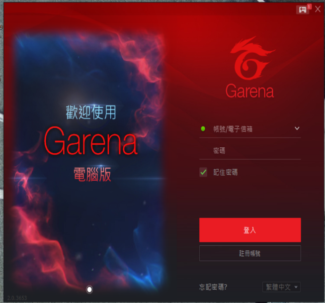
登入頁面中填入對應已註冊帳號與密碼即可成功登入。另有gm帳戶能開啟特別功能，輸入對應指令能觸發其相對功能，在此實作將帳戶全數清除之功能。
登入成功後進入遊戲頁面，其中包含小遊戲，於每次完成遊戲後會紀錄本帳號之最高成績。該小遊戲能選擇使用觸控或者陀螺儀兩種操作模式，陀螺儀操作難度較高，分數計算為兩倍。
另外延伸出提高使用者體驗的清單功能也是需要利用到以上條件判斷式來回傳其結果。以下將展示各頁面的程式碼構成。
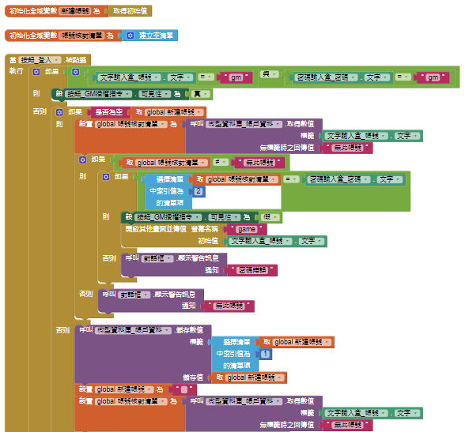
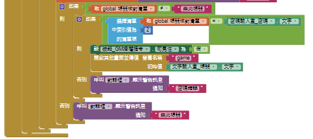
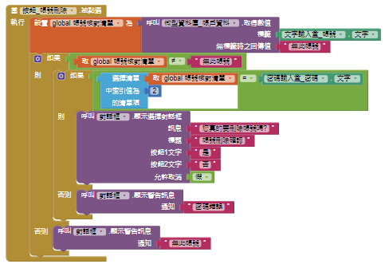
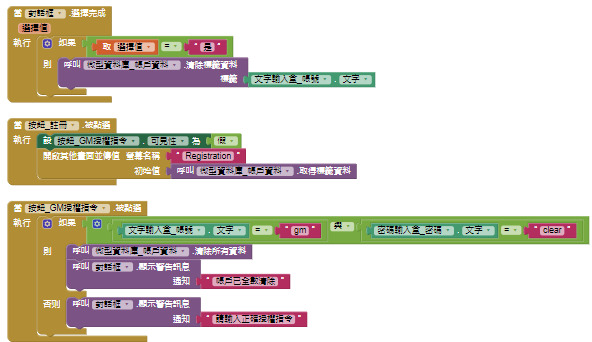
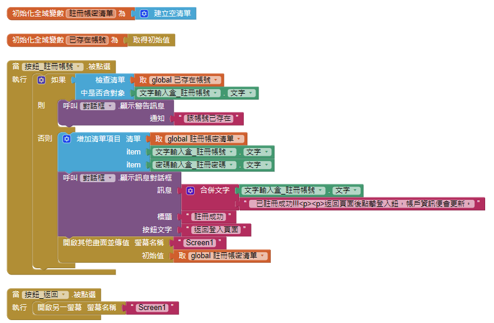
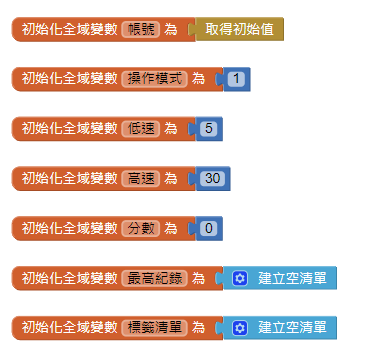
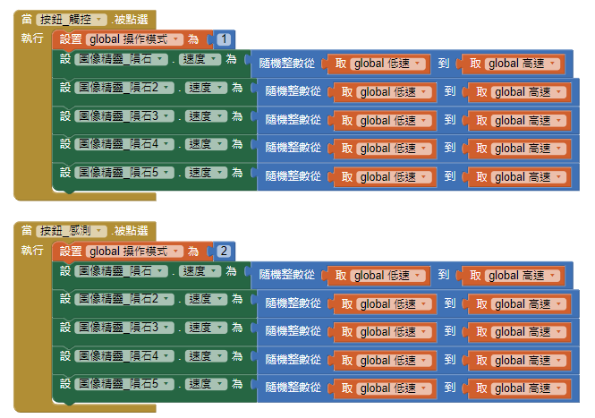
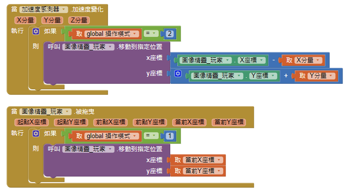
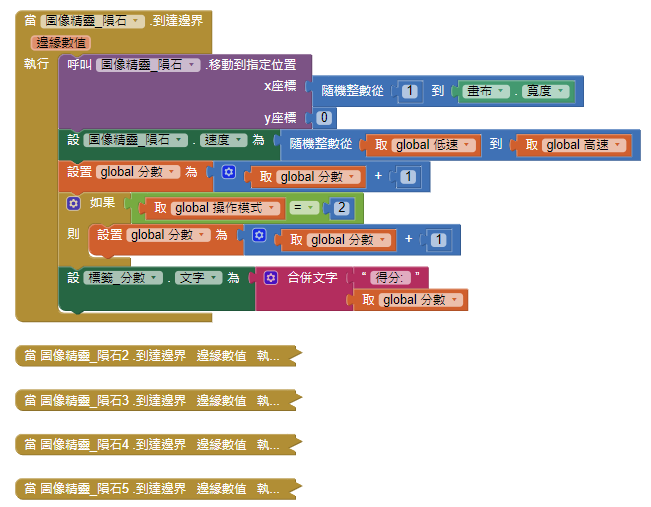
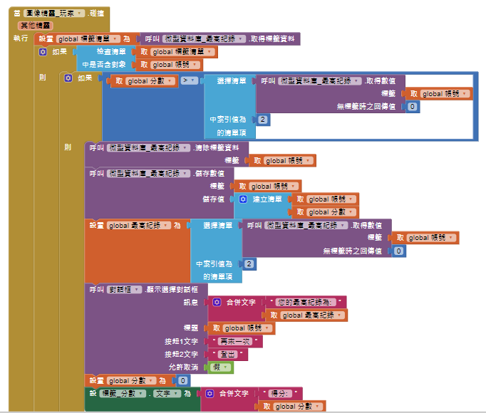
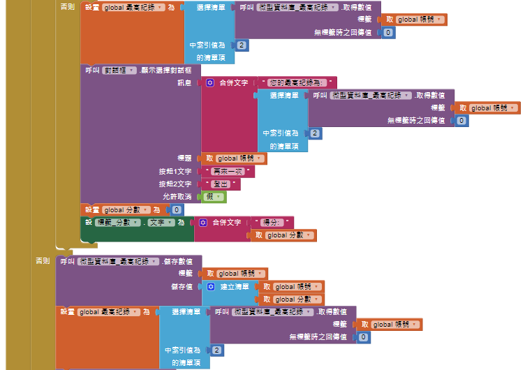
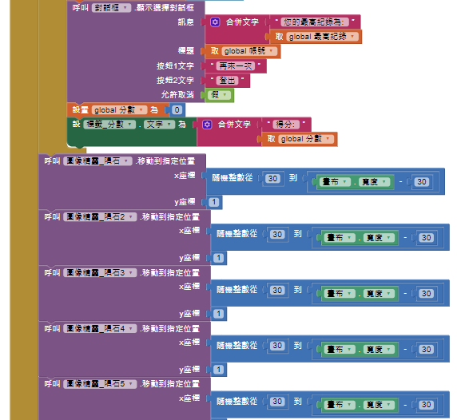
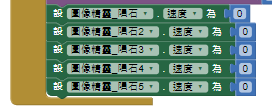
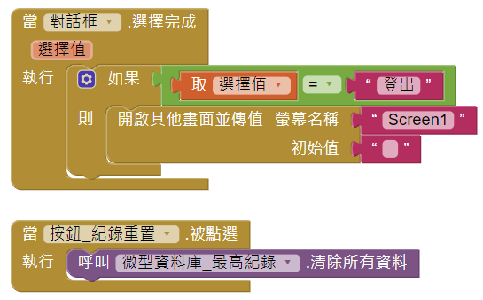
研究帳號登入系統後便能更了解其組成，在往後能針對其安全缺口做日益補強且更能了解到後續選課等之學習方向。
未來能藉由學習資料庫系統與網路安全相關知識已做融合，完成更強大的網絡安全驗證系統，在足夠健全的情況下能提供安全的金流交易平台環境等。